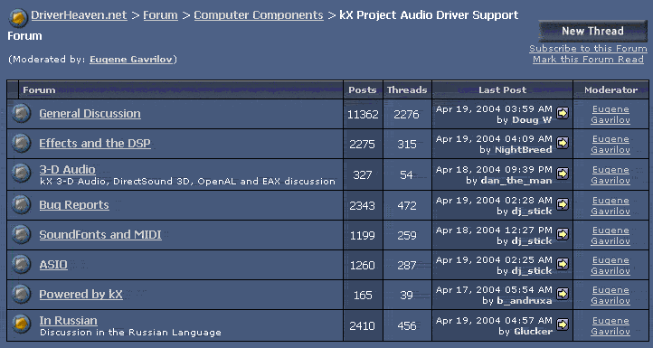

The kX Forums exist as a place for people to discuss issues, problems and suggestions relating to the kX Project Drivers.
Note: Although the forum is a place to ask questions, there
is a certain standard of behaviour that you should adhere to:
No abuse or swearing
Being polite and patient
Not making demands on the kX Team (They are doing this for free)
and searching the forums for answers before posting questions
The first to points there need no explanation, and as for not making demands, the kX Team are doing this for free for your benefit, and may have jobs and other matters to take care of before working on the kX Project.
The fourth point is a courtesy to forum members, the senior members of the forum can get quite annoyed if the same question is posted again and again… that is one of the reasons that made me start this guide.
So please use the search function of the forum for an answer if possible, and if you can't find an answer then post your question, then either of the kX Developers, myself or the other members of the forum will answer your question as soon as they can.
That also goes two ways, if someone asks a question that you know the answer to, please take the time to post a reply, the kX Forums probably wouln't be where they are today, or even exist at all, if people did not take the time to help other members.
The forums are not run by the kX team, but are part of a seperate forum on Driverheaven.net, as such any issues about signing up and logging in should be directed at the administrators there, not at the kX Team.
This is what the title bar of Driverheaven looks like…
1. Is the button to register to participate in the forums, click that and follow
the steps to become a member
2. Is the search button, use this to search the forums for answers to problems
you may be having.

This is the list of forums you can post in relating to the kX Project.
General Discussion is where you post suggestions, general
issues and information relating to kX. New version announcements will be posted
here.
Effects and the DSP is the forum relating to the DSP and the effects modules,
where you ask question specifically about the DSP and effects, and visit often
as people who write DSP modules will post links in here.
3-D Audio is the forum relating to the 3D audio aspect of kX, where 3D audio
issues are discussed.
Bug Reports is where you post comments relating to bugs occuring in
the kX Project software.
Soundfonts and MIDI is the forum relating to all MIDI-related discussion and
issues.
ASIO is the forum to visit in respect to ASIO issues
Powered by kX is the forum to post links to music you have made or recorded
using the kX Project Drivers
In Russian is the Russian kX forum
If you find that the answers provided help you solve your solution, please reply in the forum so we know what we are saying is right, and if you did anything differently, please say that as well so that other members can benefit from your experience.
Last but not least, please find the time to thank the kX Project Developers for the kX Drivers, and those members of the forum that helped you with your problem.
Remember the kX Forums are a friendly place and members are encouraged to post links to music they have made and to help others with troubles - without these forums I would have been lost with kX.